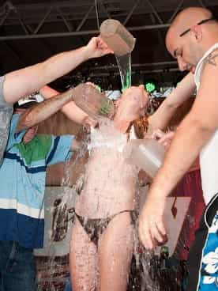

< < < Back
5 Ways To Land (And Keep) A Quality Boyfriend – Return Of Kings
It has recently come to my attention that a significant portion of our readership is, in fact, female. It therefore only seems fair—in the spirit of gender equity—to provide our lady readers with some of the same top-shelf self-improvement content we pride ourselves on providing our male readers day in and day out.
I needn’t tell you that while women control the gateway to sex—most, if not every, man’s true objective—men control the gateway to the increasingly elusive female prize of commitment. In other words, while much of the advice for men here is centered on getting laid, advice for women will necessarily focus on landing and keeping a quality boyfriend—since getting laid for a woman is among the easiest things in human creation.
But this isn’t as easy as it sounds. With so many girls giving away the milk, fewer and fewer quality men are choosing to buy the cow. Add to that, a massive crisis in (especially American) women’s girl-game—and a precipitous decline in the population of masculine men—and you have a perfect storm of slim pickings for the relationship-worthy girls among us.
How to get a good man and keep him:
1. Look good and work on staying that way.
This may seem obvious, but it’s worth repeating that men are visual creatures who value beauty—in various aspects of their lives—above most other things. Being overweight, poorly dressed, or clearly putting little effort into your appearance, while expecting a hunk to sweep you up, is not only ineffective but straight-up delusional. Even if you’re naturally cute, you need to keep yourself in shape (ideally by being active), learn to dress your body, and take care of your skin. We men do all of this too.
Whatever you do, don’t cut your hair short—it looks terrible, despite what your girlfriends disingenuously say, and 99 percent of men hate it, no matter what they may say. Also, don’t mutilate your body with ugly tattoos and piercings, which distract from your natural beauty at best, or make you look like walking case of Hepatitis at worst. When you do land that prize boyfriend, don’t take your foot off the gas. Keep showing that you’re putting in work into looking your best, and you will keep that man.
2. Be a pleasant, feminine sweetheart.
Being sarcastic, foul-mouthed, confrontational, and difficult just for the sake of being difficult is not funny, and are not attractive qualities, contrary to what the television might be telling you. You’d be shocked how irresistible and addictive simply being nice and pleasant to be around can be to a man. I can’t count the number of guys who’ve shacked up with a girl because—instead of feeling agitated and annoyed around their grating bitch-girlfriends—feel soothed and relaxed whenever they’re with them. Even when it comes to breaking up, guys agonize over leaving something so good on the table. They can’t pull away. Don’t buy into the feminist propaganda that lies to you by saying that being sweet automatically makes you stupid or a push-over. In fact, it’s being a willful irritant that makes you stupid and, more importantly, single.
3. Don’t be a slut.
Even though that same propaganda is trying to tell you that sex is the same for men and women—and that the number of sexual partners a woman has doesn’t matter—this simply isn’t true. I’d hate to break it to you, but to an overwhelming majority of quality men, your past does matter, especially if you want him to think of you as relationship material and stick around. That doesn’t mean he expects a virgin, or that withholding sex for as long as possible should be your strategy. It simply means that your slutty past—or present—is a liability, whether you broadcast it or not.
Note: Attention-whoring–whether that’s dancing on tables in a bar or uploading hundreds of sexy pictures of yourself to Facebook for the ego-boosting admiration of your many male “friends”–is a form of sluttiness.

4. Have some domestic skills.
Nothing discourages a man more than bragging about your non-existent domestic skills. If your mother didn’t have the sense to teach you how to prepare a nice meal or iron a blouse, learn. In the age of Youtube, there’s no excuse to not know these basic skills. Once in a while, make your man something for no reason, fold a shirt, clean up after yourself. He will notice, and he will be more attracted to you for it.
5. Be interesting.
Cultivate other parts of you above and beyond your looks. An attractive, well-rounded girl has a long waiting list of top-shelf guys hoping to make them a long-term girlfriend. Put down the iPhone and learn an instrument, practice a (real) dance, or master a fine art. Hone your conversation skills. Instead of copy-catting jokes that Liz Lemon said last night, be original, be creative. An interesting girl, with all of the other traits above, starts to look like not just girlfriend-material, but like a wife and mother.
While our (many) detractors enjoy calling us women-hating, proto-rapist manipulators we’re, in fact, little more than a group of men committed to, even obsessed with, constant self-improvement. Our successes with women stem from the fruits of that labor.
That success needn’t be limited to on-demand sexual conquests for men. Women can have “game” too.
Read More: 8 Signs You Should Break Up With A Girl


{kind=link}
{kind=link}
{kind=link}